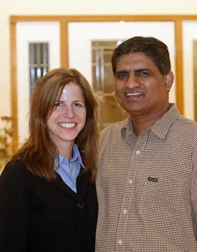

 |
| Amanda and Sajid Ghauri/photo by Dave Samson, The Forum |
{kind=link}
2 cultures + 2 faiths = 4 kids and a lasting relationship for Moorhead couple
By Roxane B. Salonen
MOORHEAD – Sajid Ghauri was standing in a line at the Minnesota State University Moorhead library, waiting to check out a book, when he glanced up and caught sight of the pretty woman near the counter.
He tried staying calm, but his heart insisted on doing somersaults.
Hopeful it wouldn’t be the last time he’d see her, Sajid stored the visual of that fleeting moment in his mind.
A second encounter came not long afterward at an event featuring a campus folk-dancing ensemble. Sajid had shown up with the singular intention of supporting a friend, but by the end of the session, he’d been finagled into joining Heritage Dancers.
The instructor’s recruiting abilities played a role, but perhaps even more influential was his noticing among the troupe the same beautiful girl he’d seen at the library.
She was a local gal, he came to learn, by the name of Amanda Wray.
“It was love at first sight, but I didn’t tell her. I didn’t want to scare her,” Sajid said.
After all, he was in a new country – a world far from his homeland of Pakistan where different rules concerning love applied. He didn’t want to ruin any slim chance he might have.
As it turned out, Amanda was similarly struck by Sajid, who’d inadvertently charmed her while struggling to find his dance legs as the group’s newest member.
“He was really cute when he first started to dance,” she said, giggling at the memory. “He would sort of bounce.”
“Well, I didn’t have a lot of coordination,” Sajid cut in. “I wasn’t really good then, or even later, but it was fun.”
Together, and with the rest of the group, they learned a host of folk dances, including those of Mexican, Finish, German, Italian and Native American origins.
But the most vibrant has been the dance of their lives together, which comprises 20 years of marriage, two cultures, two faiths and four new lives: Jamal, 15; Jasmine, 12; Ruchsana, “Sana,” 9; and Sameer, “Sammy,” 2.
One of Amanda’s closest childhood friends, Lori (Walker) Knoll of Fargo, was a bridesmaid in the couple’s two-culture wedding in September of 1992. Like the rest of the attendants, she wore a colorful sari and, instead of flowers, carried a tray of henna, while Amanda donned a traditional American wedding dress.
Though Sajid eventually won her over as a suitable suitor for her friend, Knoll said, their initial meeting several years earlier had left her wondering.
Amanda had run to the bathroom, leaving the two to talk. Sajid saw it as an opportunity to test out Knoll’s ability to call his bluff and casually mentioned that life was going well – both here and with his wife and children back in Pakistan.
“Her eyes were this big,” Sajid said, making large circles with his fingers.
It was Knoll’s introduction to what she refers to as Sajid’s characteristic, “sometimes a little twisted” sense of humor.
“When Amanda came back she could tell from my expression that Sajid had said something disturbing,” Knoll said. “She said, ‘Oh no, don’t believe anything he says!’ ”
While admitting to a propensity for going too far with his jesting, Sajid also maintains that keeping things light has been a saving element in their marriage.
“I think humor is huge,” Amanda agreed. “You have to be able to laugh at yourself and your partner.”
Pausing, he then added, “Well, maybe I swear in my language so she doesn’t know.”
“Yes, there you go. If you want a successful marriage, have a second language your partner doesn’t know,” Amanda said. “Seriously, though, I think when it gets to the point that we’re about to blow up at each other, whether through tears or anger, that’s when our communication gates open up and we’re able to focus.”
Focus and frequent communication has been necessary in a marriage introducing so many variables.
But the oppositional voices couldn’t change how they both felt whenever they were together.
“I knew I wanted something bigger in my life, but I didn’t know what it was,” Amanda said. “Every time I came back and was face to face with Sajid, we just connected on so many levels; on a human level but also on a spiritual level. And when you feel something is right, you have that strength to follow through.”
Running, biking and playing soccer are among the activities they’ve enjoyed together through the years. Camping has been another, though not all of their campouts have been successful.
“In the middle of the night I got up, took a hot shower, got dressed and put everything in the car. We slept in the car because it was much more warm and comfortable than the tent. So you do sacrifice for each other,” he said. “I will do the camping if we set the camp in the hotel room.”
“Oh, we spend time in hotels way more than in the woods,” Amanda said, revealing her playful nature. “I get my camping weekend once a year.”
Another sacrifice they agreed to while dating: no living together.
“I never planned on just trying it out and living with him,” Amanda said.
And so began the family that has welcomed not only children but countless relatives and friends who have passed through, some staying for a day or two, others for several years.
Sajid said the open-door welcome they’ve extended to others was modeled in his childhood home, where visitors constantly came and went.
“And in their culture you don’t go to someone’s house without having a cup of tea or something to eat,” Amanda said.
As such, the family has hosted many gatherings, most featuring a blend of American and Pakistani fare.
She and her husband, Ron, also have enjoyed exchanging books and thoughts on the Muslim and Christian faiths with the Ghauris, and the Knolls’ three children have benefited from the multicultural friendship.
“It brings a rich conversation into our family, too. We all learn from each other,” she said.
A baptized Christian, Amanda has embraced the Muslim faith but without abandoning her Christian roots.
“We have such a great respect for each other’s traditions,” she said. “Islam is really a way of life, whereas Christianity is a religion.”
“I put the Bible at the same level that I put the Koran,” Sajid said. “I’ve gone to friends’ houses and seen a Bible sitting on the floor. To me, that’s disrespect of a holy book. At our house we put the Koran at a very high and safe level because it’s God’s book. And much of the Koran is actually very similar to the Bible.”
More striking than faith differences have been the cultural ones, such as what Sajid experienced in the hours before the birth of their first child.
“In our culture our whole family sits outside the door and waits for a baby to be born, but when I called Amanda’s mom and said, ‘Hey, we’re going to the hospital,’ she said, ‘Good luck, let me know when you have your baby,’ ” Sajid said. “That was an absolute surprise for me.”
“And yet I didn’t have any cultural expectation of my family coming to the hospital,” Amanda said. “I just wanted to get through it!”
When asked what makes for a successful marriage, Sajid concluded: “You have to ignore each other’s weaknesses, talk to each other and help each other out.”
And despite his high work ethic, he said, balance is important.
“Family still comes first. You can’t just work, work, work. If you do that and it doesn’t work out, don’t cry about it,” he said. “And if you can, go out of your way and help somebody out. And don’t expect anything back.”